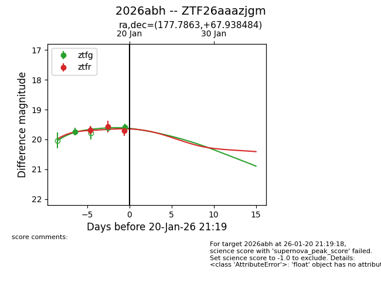
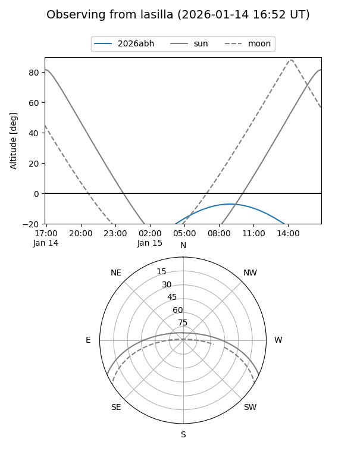
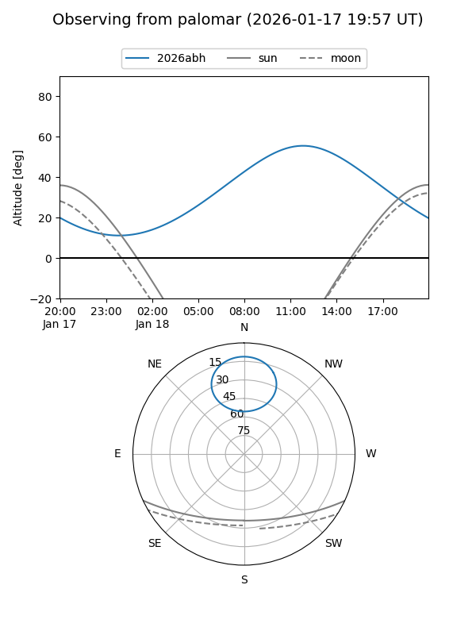
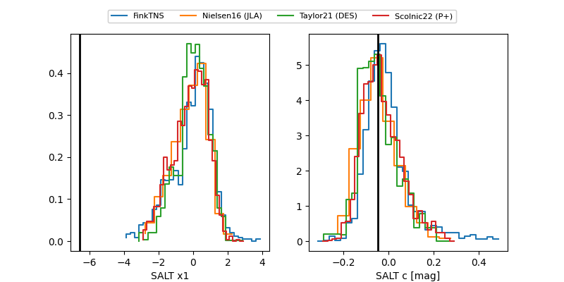

2026abh
Target 2026abh at 2026-01-25 09:56
Aliases and brokers:
FINK: link
Lasair: link
ALeRCE: link
TNS: link
YSE: link
alt names
ZTF26aaazjgm (ztf,fink_ztf)
2026abh (tns,yse)
Coordinates:
equatorial (ra, dec) = 177.7863,+67.93848
equatorial (HMS+DMS) = 11:51:08.71,+67:56:18.54
galactic (l, b) = (131.3572,+48.19151)
Flags:
Photometry:
last ztfg=19.77, ztfr=19.64
4 ztfg, 4 ztfr detections
Lightcurve

Visibility


Additional plots
